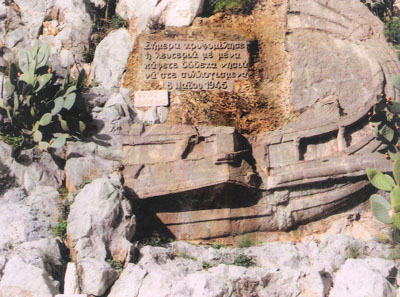

Ευρίσκονται εγκατεσπαρμένα σχεδόν σ'όλο το έργο του συγγραφέα. Ειδικό κεφάλαιο στο <<Εκ Βαθέων>>
Ενδεικτικά:
I )

Επίγραμμα σκαλισμένο σε
ανάγλυφη τριήρη σε βράχο
της Σύμης της 8 Μαΐου 1945.
Γι' αυτό ο ίδιος ο ποιητής γράφει:
Κάποτε, πριν 50 χρόνια πάνω κάτω, ζητήθηκε
από ειδική επιτροπή, δια πανελλήνιου διαγωνισμού,
ένα επίγραμμα μνήμης της 8ης Μαΐου 1945.
Ήταν η ημέρα που η Σύμη είχε την τιμή να φιλοξενήσει
την τελετή υπογραφής που θα σφράγιζε πια
οριστικά την ελευθερία μας.
Αποφάσισα να δηλώσω συμμετοχή. Είχα
φαντασθεί την Σύμη να ξυπνάει εκείνο το πρωί
σαν απ' όνειρο και με το ξύπνημα να διαλαλεί στα
Δωδεκάνησα:
Απόψε κρυφομίλησε η Λευτεριά με μένα.
Πάψετε Δωδεκάνησα νάστε συλλογισμένα.
Έτσι ακριβώς, όπως το βλέπετε, σε μορφή
μάλιστα δίστιχου δικού μας το 'γραψα και το 'στειλα.
Ήταν διαλάλημα μεγάλης προσδοκίας που θα
πραγματοποιούνταν οπωσδήποτε. Η Σύμη ήταν
βέβαιη πια γι' αυτό, γιατί της το 'πε κρυφά η ίδια
η Λευτεριά αυτή την νύχτα που ξημέρωσε.
II )
ΜΙΑ ΖΩΗ ΣΤΡΑΤΙΩΤΗΣ
Μια ζωή στρατιώτης γενναίος του Μεγάλου Αλεξάνδρου
ύστερα από τόσες ένδοξες νίκες, κοίτουμ' εδώ,
στης δικής μου ιστορίας το δρόμο, αμίλητη πέτρα!
III )
Επιτάφιο Επίγραμμα
Στο Μνήμα του Δημήτρη Βαρέλη
του γιού μου
Και ξάφνου
Ούτε πού ούτε πότε.
Ούτε πώς και γιατί
Η πόρτα ετούτη δεν κρούεται.
Και δεν ανοίγει.
Ούτε θ' ανοίξει ποτέ!
Δεν έχει προς τα εδώ προσδοκίες.
Εκείνος ο κόσμος είναι ο κόσμος σας.
Εκείνος με τις αιτίες και τους σκοπούς.
Εκείνος με τα σύνορα και τους κύκλους.
Εκείνος με τις μυριάδες μυριάδων φωνές
ο αντιλαλών στα ερωτήματα της αγωνίας σας.


{kind=link}